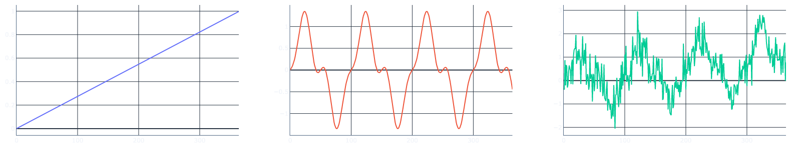

The COVID related lockdowns resulted in quite a surge in people picking up new hobbies. My activity of choice was to get to grips with the practical implementations of neural networks in Keras and TensorFlow. And the datasets I usually find most interesting are time series of various sorts it seemed natural to learn about NNs by applying them to try to modelling and forecasting time series. These notes are effectively notes to self I've made along the way.
Time series and sequence models
The basic problem is the following. A simple (univariate) time series is a sequence of numbers \[x_1, x_2, x_3, \dots, x_t, \dots\,.\] The numbers can be anything from daily COVID cases (which we have sadly become all too familiar with) to the daily stock prices on the London Stock Exchange. One thing we want to do with time series is to try and predict the future values based on our knowledge of the past values. Concretely, suppose that we have a week's worth of data (daily profit of a company for example) and want to predict the value of the time series on Monday \[ x_1, x_2, x_3, x_4, x_5, x_6, x_7 \longrightarrow x_8\,.\] There are various statistical models of time series one could apply to this problem, but we’re interested in working with neural nets here.
Given that data is sequential it makes sense to use the architecture of neural nets that is good at capturing the time dependence of the data points. Intuitively the more recent the data is, the more likely it is to influence the current and future values. This is why I first wanted to build a recurrent neural network model. RNNs are tailored for working with sequential data. For the technical explanation of RNNs, here is the compulsory reference to Andrej Karpathy’s blog post, where he gives a detailed explanation of the various types of RNNs.
The code
